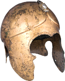

RTR: Imperium Surrectum
RTR: Imperium SurrectumRetinue — F
← all retinue · all traits · wiki index
21 retinue members whose name begins with F. A · B · C · D · E · F · G · H · I · J · K · L · M · N · O · P · Q · R · S · T · U · V · W · X · Y · Z
Fabius Pictor
 unique — one in the world at a time · never for 19 of the cultures.
unique — one in the world at a time · never for 19 of the cultures.
Effects: +1 Influence
Rome's first annalist of note and grandson of the famous Caius Fabius Pictor who painted the Temple of Salus in Rome. Quintus is well connected with many eminent Roman Senators.
Acquisition is tied to the trait: Firm Personal Morality.
Cultures that never receive it (19)
Gallic · Germanic · Dacian · Celtiberian · Brittonic · Thracian · Phoenician · Libyan · Caucasian · Anatolian · Iranian · Arab · Indian · Egyptian · Ethiopian · Greek · Western Hellenistic · Eastern Hellenistic · Illyrian
How it is gained — 2 triggers, at the end of the character's turn
| When | Chance | Conditions | When | Chance | Conditions | |||
|---|---|---|---|---|---|---|---|---|
| at the end of the character's turn | 20% | EndedInSettlement and RemainingMPPercentage = 100 and SettlementBuildingExists >= academy and IsGeneral and I_TurnNumber >= 90 and I_TurnNumber <= 220 and Trait Prim >= 1 | at the end of the character's turn | 20% | EndedInSettlement and RemainingMPPercentage = 100 and SettlementBuildingExists >= academy and IsGeneral and I_TurnNumber >= 90 and I_TurnNumber <= 220 and Trait Prim >= 1 |
---
Fable Weaver
 never alongside Lore Keeper, Lawyer, Lawyer · never for 3 of the cultures.
never alongside Lore Keeper, Lawyer, Lawyer · never for 3 of the cultures.
Effects: +1 Management
This storyteller has a tale for every occasion. Need a moral lesson? He’s got one, though the lesson often seems suspiciously tailored to favour whoever’s paying him. Still, his fables have a way of inspiring, or at least keeping people entertained.
Acquisition is tied to traits: Eligible For Feasting, Fluent Speaker.
Cultures that never receive it (3)
Phoenician · Libyan · Roman
How it is gained — 2 triggers, ending a turn in a settlement
| When | Chance | Conditions | When | Chance | Conditions | |||
|---|---|---|---|---|---|---|---|---|
| ending a turn in a settlement | 2% | RemainingMPPercentage = 100 and SettlementBuildingExists >= great_forum and Trait RhetoricSkill >= 1 | ending a turn in a settlement | 1% | RemainingMPPercentage = 100 and SettlementBuildingExists >= great_forum and Trait CelticFeast >= 2 and ( CultureType barbarian or CultureType celtiberian or CultureType brittonic or CultureType germanic or CultureType da… |
---
Falernian Winemaker

Effects: +1 Influence, -1 Unrest, -1 Command
Grown on the volcanic slopes of northern Campania, Falernian wine is the most prestigious, expensive, and intoxicating vintage in the known world, so strong that it can catch fire. This man oversees the general's personal supply, ensuring every amphora is aged to perfection. A glass of white Falernian makes every meal more enjoyable, though it gives the general a terrible headache the morning after a party.
Acquisition is tied to traits: Social Drinker, NaturalCharisma, Wealthy.
How it is gained — 3 triggers, ending a turn in a settlement
| When | Chance | Conditions | When | Chance | Conditions | When | Chance | Conditions | |||
|---|---|---|---|---|---|---|---|---|---|---|---|
| ending a turn in a settlement | 1% | Trait Wealthy >= 1 and HasResource c_italy and RandomPercent < 40 | ending a turn in a settlement | 2% | Trait NaturalCharisma >= 2 and SettlementName Capua | ending a turn in a settlement | 5% | Trait Drink >= 1 and SettlementName Capua |
---
Famed Champion
 unique — one in the world at a time · never alongside Beggar, Silent Guide · never for 7 of the cultures.
unique — one in the world at a time · never alongside Beggar, Silent Guide · never for 7 of the cultures.
Effects: +1 Subterfuge
While others hide behind their shields, this champion challenges his enemies for duels, finding excitment in killing his rivals in plain sight.
Acquisition is tied to the trait: Cutthroat.
Cultures that never receive it (7)
Gallic · Germanic · Dacian · Celtiberian · Brittonic · Thracian · Scythian
How it is gained — 1 trigger, on surviving an assassination attempt
| When | Chance | Conditions | ||||||
|---|---|---|---|---|---|---|---|---|
| on surviving an assassination attempt | 5% | RemainingMPPercentage = 100 and Trait GoodAssassin > 2 and AgentType = assassin |
---
Famous Athlete
never for 14 of the cultures.
Effects: +1 Influence
He can run faster than the wind, jump higher than a horse, and throw a javelin farther than most can dream! He’s famous, he’s fit, and he brings you glory just by standing next to you, until he finds a better patron, of course.
Cultures that never receive it (14)
Gallic · Germanic · Dacian · Celtiberian · Brittonic · Thracian · Phoenician · Libyan · Scythian · Caucasian · Anatolian · Iranian · Arab · Indian
How it is gained — 1 trigger, ending a turn in a settlement
| When | Chance | Conditions | ||||||
|---|---|---|---|---|---|---|---|---|
| ending a turn in a settlement | 1% | IsGeneral and SettlementBuildingExists >= wooden_amphitheatre and RandomPercent < 6 |
---
Famous Charioteer
 never for 20 of the cultures.
never for 20 of the cultures.
Effects: +1 Influence, +1 Training Animal Units
Master of horses and wheels, he speeds through the arenas like Mercury himself. The people cheer for him, the women want him, and the horses… well, they just try to keep up.
Acquisition is tied to the trait: Race Goer.
Cultures that never receive it (20)
Gallic · Germanic · Dacian · Celtiberian · Brittonic · Thracian · Scythian · Phoenician · Libyan · Caucasian · Anatolian · Iranian · Arab · Indian · Egyptian · Ethiopian · Greek · Western Hellenistic · Eastern Hellenistic · Illyrian
How it is gained — 1 trigger, ending a turn in a settlement
| When | Chance | Conditions | ||||||
|---|---|---|---|---|---|---|---|---|
| ending a turn in a settlement | 3% | Trait RacesFanRomanVice >= 1 and RemainingMPPercentage = 100 and SettlementBuildingExists = huge_stadium |
---
Famous Warrior
 never alongside Decorated Hero · never for 13 of the cultures.
never alongside Decorated Hero · never for 13 of the cultures.
Effects: +1 Troop Morale, +2 Training Units
The leader who can attract great warriors to his cause increases his own stature in the eyes of the people. His presence certainly boosts your prestige.
Acquisition is tied to traits: Lone Wolf, War Chief.
Cultures that never receive it (13)
Phoenician · Libyan · Caucasian · Anatolian · Iranian · Arab · Indian · Egyptian · Ethiopian · Greek · Western Hellenistic · Eastern Hellenistic · Roman
How it is gained — 3 triggers, after a battle, ending a turn in a settlement
| When | Chance | Conditions | When | Chance | Conditions | When | Chance | Conditions |
|---|---|---|---|---|---|---|---|---|
| after a battle | 4% | WonBattle and PercentageEnemyKilled >= 50 and Trait Warlord >= 2 and IsGeneral | ending a turn in a settlement | 1% | Trait Followers > 4 and RemainingMPPercentage = 100 | ending a turn in a settlement | 2% | RemainingMPPercentage = 100 and SettlementBuildingExists >= mic_3 and RandomPercent < 10 and IsGeneral |
---
Fanatic
 never alongside Apocalyptic Preacher, Zealot, Aramaic Ascetic · never for 14 of the cultures.
never alongside Apocalyptic Preacher, Zealot, Aramaic Ascetic · never for 14 of the cultures.
Effects: -2 Management, +1 Troop Morale, +2 Unrest
Some people willingly purge this world in order to prepare for the next one.
Acquisition is tied to the trait: Favour of the Gods.
Cultures that never receive it (14)
Gallic · Germanic · Dacian · Celtiberian · Brittonic · Thracian · Egyptian · Ethiopian · Greek · Western Hellenistic · Eastern Hellenistic · Roman · Phoenician · Libyan
How it is gained — 1 trigger, ending a turn in a settlement
| When | Chance | Conditions | ||||||
|---|---|---|---|---|---|---|---|---|
| ending a turn in a settlement | 1% | Trait ReligiousMania >= 2 and RemainingMPPercentage = 100 and SettlementBuildingExists >= awesome_temple |
---
Father Helmet

never alongside Royal Bendis Greave · never for 8 of the cultures.Effects: +1 Influence
After coming of age, this man has received his old father helmet as a gift. He shall wear it with pride!
Cultures that never receive it (8)
Caucasian · Anatolian · Iranian · Arab · Indian · Phoenician · Libyan · Roman
How it is gained — 1 trigger, on coming of age
| When | Chance | Conditions | |||||||||
|---|---|---|---|---|---|---|---|---|---|---|---|
| on coming of age | 10% | IsGeneral and CultureType thracian |
---
Finely Bred Horse
 never alongside Trusty Steed, Senatorial Horse, Blood-Sweating Horse.
never alongside Trusty Steed, Senatorial Horse, Blood-Sweating Horse.
Effects: +1 Cavalry Command, +1 Influence, +2 Movement Points
This is a horse of superior qualities that will make his master proud and that his master's peers will regard with knowing appreciation. It will offer great speed and stamina when required, helping his owner in travel and battle and maybe making him even more adept at the use of cavalry in war.
Acquisition is tied to traits: Skilled Cavalry Commander, NaturalEnergy.
How it is gained — 3 triggers, ending a turn in a settlement
| When | Chance | Conditions | When | Chance | Conditions | When | Chance | Conditions |
|---|---|---|---|---|---|---|---|---|
| ending a turn in a settlement | 2% | IsGeneral and RemainingMPPercentage = 100 and SettlementBuildingExists >= small_stadium and SettlementBuildingExists >= forum and Trait GoodCavalryGeneral >= 1 | ending a turn in a settlement | 2% | Attribute Command > 3 and RemainingMPPercentage = 100 and Trait GoodCavalryGeneral >= 2 and Trait NaturalEnergy >= 3 | ending a turn in a settlement | 2% | Attribute Command > 5 and RemainingMPPercentage = 100 and SettlementBuildingExists >= forum and Attribute Command > 5 |
---
Firekindler of the Sacred Flames
 never alongside Pyrotechnician, Pyromaniac · never for 11 of the cultures.
never alongside Pyrotechnician, Pyromaniac · never for 11 of the cultures.
Effects: -2 Unrest, +5 Bribe Resistance
Taking care of the fires of purification is their sacred duty.
Cultures that never receive it (11)
Gallic · Germanic · Dacian · Celtiberian · Brittonic · Thracian · Phoenician · Libyan · Egyptian · Ethiopian · Roman
No trigger in the file grants this — it comes from the campaign script or an event, and is listed here because the game still shows it when it arrives.
---
Fisherman
 never alongside Animal Trader, Beastmaster, Veterinarian.
never alongside Animal Trader, Beastmaster, Veterinarian.
Effects: -1 Influence, +5 Trading, -1 Squalor
He brings in fresh seafood to feed the masses and brings a distinct smell that drives off dignitaries. Perfect for when you want trade profits but not foreign visitors.
Acquisition is tied to the trait: Considerate Governor.
How it is gained — 3 triggers, ending a turn in a settlement, at the end of the character's turn
| When | Chance | Conditions | When | Chance | Conditions | When | Chance | Conditions |
|---|---|---|---|---|---|---|---|---|
| ending a turn in a settlement | 2% | RemainingMPPercentage = 100 and SettlementBuildingExists >= port and Trait NonAuthoritarian >= 1 and IsGeneral | ending a turn in a settlement | 2% | RemainingMPPercentage = 100 and SettlementBuildingExists >= salted_fish_1 and IsGeneral | at the end of the character's turn | 2% | EndedInSettlement and RemainingMPPercentage = 100 and SettlementBuildingExists >= awesome_temple and Trait NonAuthoritarian >= 1 and IsGeneral |
---
Floozy
 never alongside Wailing Woman, Pet Sheep, Concubine · never for 13 of the cultures.
never alongside Wailing Woman, Pet Sheep, Concubine · never for 13 of the cultures.
Effects: +1 Troop Morale, -2 Personal Security
Every truly great man deserves the companionship of a cheap floozy at some point in his career!
Acquisition is tied to traits: Untouched By Fear, Casual Adulterer.
Cultures that never receive it (13)
Phoenician · Libyan · Caucasian · Anatolian · Iranian · Arab · Indian · Egyptian · Ethiopian · Greek · Western Hellenistic · Eastern Hellenistic · Roman
How it is gained — 1 trigger, after a battle
| When | Chance | Conditions | |||||||||
|---|---|---|---|---|---|---|---|---|---|---|---|
| after a battle | 15% | WonBattle and Trait Girls >= 1 and Trait Brave >= 1 and IsGeneral |
---
Foodtaster

Effects: +1 Personal Security
Death can come in many forms, and even the dining table requires a guardsman of sorts.
Acquisition is tied to the trait: Scant Trust.
How it is gained — 3 triggers, on surviving an assassination attempt, ending a turn in a settlement, at the end of the character's turn
| When | Chance | Conditions | When | Chance | Conditions | When | Chance | Conditions |
|---|---|---|---|---|---|---|---|---|
| on surviving an assassination attempt | 3% | Trait Paranoia >= 1 and IsGeneral | ending a turn in a settlement | 2% | Trait Paranoia >= 1 and RemainingMPPercentage = 100 | at the end of the character's turn | 2% | EndedInSettlement and RemainingMPPercentage = 100 and SettlementBuildingExists >= mic_3 and Trait Paranoia >= 1 and IsGeneral |
---
Foreign Affairs Scholar
 never alongside Scholar Apprentice, Astronomy Scholar, Geography Scholar · never for 9 of the cultures.
never alongside Scholar Apprentice, Astronomy Scholar, Geography Scholar · never for 9 of the cultures.
Effects: +1 Influence, +2 Line of Sight
Knowledge of foreign people lies in empathy with those people, and this scholar has dedicated himself to this type of knowledge.
Acquisition is tied to traits: Educated in Carthage, Administrator, Welcoming To Foreigners.
Cultures that never receive it (9)
Gallic · Germanic · Dacian · Celtiberian · Brittonic · Thracian · Phoenician · Libyan · Roman
How it is gained — 5 triggers, ending a turn in a settlement, on coming of age
| When | Chance | Conditions | When | Chance | Conditions | When | Chance | Conditions |
|---|---|---|---|---|---|---|---|---|
| ending a turn in a settlement | 1% | RemainingMPPercentage = 100 and SettlementBuildingExists = awesome_temple and Trait GoodAdministrator >= 1 and FactionType parni and IsGeneral | ending a turn in a settlement | 1% | RemainingMPPercentage = 100 and SettlementBuildingExists >= awesome_temple and Trait GoodAdministrator >= 1 and FactionType armenia and IsGeneral | ending a turn in a settlement | 1% | RemainingMPPercentage = 100 and SettlementBuildingExists = ludus_magnus and IsFromFaction fgroup_eastern and Trait Xenophilia >= 1 and IsGeneral |
| ending a turn in a settlement | 1% | RemainingMPPercentage = 100 and SettlementBuildingExists = scriptorium_sp1 and Trait GoodAdministrator >= 1 and IsGeneral | on coming of age | 10% | Trait CarthageEducation = 1 and RandomPercent < 10 |
---
Foreign Affairs Scholar (Foreign Affair Scholar2)
 never for 9 of the cultures.
never for 9 of the cultures.
Effects: +2 Negotiation, +2 Line of Sight, +1 Influence
This scholar has studied the ways of foreign cultures, and his wisdom in dealing with them has saved many a negotiation. He’ll make friends with the barbarians, the Persians, and maybe even the Greeks, if that’s your thing.
Cultures that never receive it (9)
Gallic · Germanic · Dacian · Celtiberian · Brittonic · Thracian · Phoenician · Libyan · Roman
How it is gained — 4 triggers, ending a turn in a settlement
| When | Chance | Conditions | When | Chance | Conditions | When | Chance | Conditions |
|---|---|---|---|---|---|---|---|---|
| ending a turn in a settlement | 1% | RemainingMPPercentage = 100 and SettlementBuildingExists = awesome_temple and FactionType parni and AgentType = diplomat | ending a turn in a settlement | 1% | RemainingMPPercentage = 100 and SettlementBuildingExists >= awesome_temple and FactionType armenia and AgentType = diplomat | ending a turn in a settlement | 1% | RemainingMPPercentage = 100 and SettlementBuildingExists = ludus_magnus and FactionType ptolemaic and AgentType = diplomat |
| ending a turn in a settlement | 2% | RemainingMPPercentage = 100 and SettlementBuildingExists = scriptorium_sp1 and AgentType = diplomat |
---
Foreign Dignitary
 never alongside Foreign Hostage.
never alongside Foreign Hostage.
Effects: +1 Negotiation
Foreigners can be trusted, mostly, to do the right thing, but for their own people. They do have a great understanding of foreign customs and protocols, though.
How it is gained — 3 triggers, at the end of the character's turn, ending a turn in a settlement
| When | Chance | Conditions | When | Chance | Conditions | When | Chance | Conditions |
|---|---|---|---|---|---|---|---|---|
| at the end of the character's turn | 1% | InEnemyLands and AgentType = diplomat | ending a turn in a settlement | 2% | RemainingMPPercentage = 100 and SettlementBuildingExists >= scriptorium_sp1 and AgentType = diplomat | ending a turn in a settlement | 2% | RemainingMPPercentage = 100 and SettlementBuildingExists >= academy and AgentType = diplomat |
---
Foreign Hostage
 never alongside Foreign Dignitary.
never alongside Foreign Dignitary.
Effects: +1 Negotiation
This man is hostage to another's good behaviour, but favoured thanks to his own skills and good conduct.
How it is gained — 1 trigger, at the end of the character's turn
| When | Chance | Conditions | |||||||||
|---|---|---|---|---|---|---|---|---|---|---|---|
| at the end of the character's turn | 1% | InEnemyLands and AgentType = diplomat |
---
Former Makedonian Soldier
never alongside Makedonian Noble, Wolf Warrior.
Effects: +1 Command
When the Gauls marched their force through Thrace, after having killed the Macedonian king, most soldiers withdrew from their posts, but some remained, selling their expertise to the petty Thracian warlords that emerged after the fall of Macedonian rule over the Thracian interior.
Acquisition is tied to traits: Lone Wolf, Green.
How it is gained — 1 trigger, ending a turn in a settlement
| When | Chance | Conditions | |||||||||
|---|---|---|---|---|---|---|---|---|---|---|---|
| ending a turn in a settlement | 1% | Trait GeneralExperience > 2 and Trait Followers > 3 and CultureType thracian and I_TurnNumber <= 80 and Attribute Influence > 2 |
---
Freeman Clerk
 never alongside Scribe Steward.
never alongside Scribe Steward.
Effects: +1 Management, +10 Trading
While you command armies, this clerk ensures you have the funds to keep the soldiers loyal to you.
Acquisition is tied to the trait: Administrator.
How it is gained — 3 triggers, ending a turn in a settlement, at the end of the character's turn
| When | Chance | Conditions | When | Chance | Conditions | When | Chance | Conditions |
|---|---|---|---|---|---|---|---|---|
| ending a turn in a settlement | 4% | IsGeneral and RemainingMPPercentage = 100 and SettlementBuildingExists >= academy | ending a turn in a settlement | 3% | Trait GoodAdministrator >= 1 and RemainingMPPercentage = 100 and SettlementBuildingExists = centralized_mint | at the end of the character's turn | 2% | EndedInSettlement and RemainingMPPercentage = 100 and SettlementBuildingExists >= awesome_temple and SettlementBuildingExists >= forum and RandomPercent < 10 and IsGeneral |
---
Fugitivi Romani

Effects: +1 Combat vs Roman
After a crushing victory over Roman forces, this general has convinced some of the enemy’s deserters to switch sides. Knowing that returning to Rome means certain death, these deserters will fight with desperate determination, if only because they’ve run out of options.
How it is gained — 3 triggers, after a battle
| When | Chance | Conditions | When | Chance | Conditions | When | Chance | Conditions | |||
|---|---|---|---|---|---|---|---|---|---|---|---|
| after a battle | 5% | WonBattle and PercentageEnemyKilled >= 60 and GeneralFoughtFaction romans_julii and IsGeneral and not FactionType roman_rebels_1 and not FactionType roman_rebels_2 | after a battle | 5% | WonBattle and PercentageEnemyKilled >= 60 and GeneralFoughtFaction roman_rebels_1 and IsGeneral and not FactionType romans_julii and not FactionType roman_rebels_2 | after a battle | 5% | WonBattle and PercentageEnemyKilled >= 60 and GeneralFoughtFaction roman_rebels_2 and IsGeneral and not FactionType romans_julii and not FactionType roman_rebels_1 |